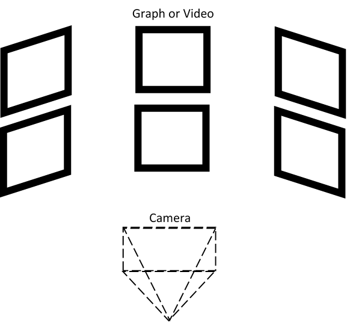

The potential programming languages that we could have used for the project were C or Java. Both have strong libraries relating to OpenGL, but the choice was made to use Java. This was due to the fact that, as our primary OS would be Android, we would need to program the application in Android, a language based upon Java. Thus, it would be easier to code using the same language, rather than having to write in another, and then translate this code.
We chose OpenGL in general as it is well-known to be an efficient graphics library that works at a low level with the hardware. Using OpenGL also gives us great freedom and control over how we create our application, allowing us to be agile if additions or changes needed to make. Since OpenGL is mainly used on mainstream computers, we opted to go for OpenGL ES 2.0, the second main version of OpenGL for Embedded Systems.
The software we used for representing graphs is OpenGL ES. Using the data collected from the sensors, the coordinates are plotted on a 2D graph that can be extended to a 3D model. After research into HTML and JavaScript rendering in an OpenGL ES environment, we concluded that creating the graphs with OpenGL ES itself was the most effective method. Further components will be included such as a constant graph update, so as new data is incoming the new points will be represented on the graph.
Having received both Google’s specification and the requirements of MSF, we concluded that we would need to have a User Interface (UI) which is easy to use with the Google Cardboard and makes use of its potential 3D virtual reality creation, whilst, at the same time, is able to display video content. Our UI is as follows:
The UI is formed of several ‘boxes’ or ‘GUIs’ (Graphics User Interfaces) which hover in front of the user in 3D polar space. On each of these GUIs there will be a graph, video, or any other methods for displaying data in a visual manner. The spherical placement of the GUIs means that, whenever one is looked at directly, it will not be distorted, and instead will appear almost 2D to the user. This allows the user to fully focus on the data represented. If need be, the user may pull the trigger, which will magnify the GUI.
For the project we were allocated a Google Cardboard, an Android phone and a DJI Phantom 3 drone. We initially intended to build our own drone, as the DJI Phantom is not open source, to be able to make use of the drone’s existing data processor and communication devices for the sensors. We looked at buying a Pixhawk flight controller, as that is one of the most commonly used ones by drone enthusiasts, and has a wide range of documentation. However, after prioritising the build of the mobile application, and making use of the sensors on ground, we decided to make rather use of an Arduino board, which could then later on be connected to an open source drone, or could work as an independent system, which we could strap on an existing drone.
For data gathering in the drone’s surroundings whilst in flight, we ordered a light intensity sensor (Digital Light Intensity Sensor Module for AVR Arduino 3V - 5V), a gas sensor (MQ-7 Carbon Monoxide CO Gas Sensor Module) and a temperature and humidity sensor (Arduino Compatible Digital Temperature Humidity Sensor Module). To be able to stream the data from the drone to the ground we have ordered a Jeelink (v3c) and Jeenode USB which will work as a telemetry to send sensor data, which will be sent to a laptop that will be the server, and then send information wirelessly to the Android phone.
For capturing video we will be making use of a GoProHero3 camera and a video transmitter and receiver. We have also done research on compatible infrared camera to use on the drone, a lower resolution camera that better suits live streaming and a gimbal to move the camera, which we will be ordering for the second half of the project.
As we needed to connect three devices together, connectivity was a key part of the project. After revising the connections between the drone, laptop and cardboard device, we decided the best way we can connect the devices will be through a device called a telemetry which uses high range radio waves to transmit the data from the drone to a laptop and then using bluetooth to transmit the data from the laptop to the cardboard device. These decisions came through as the Wi-Fi range was too short to connect the drone and laptop and Android does not support ad-hoc Wi-Fi networks. Therefore we came up with the setup that was described.
{kind=link}